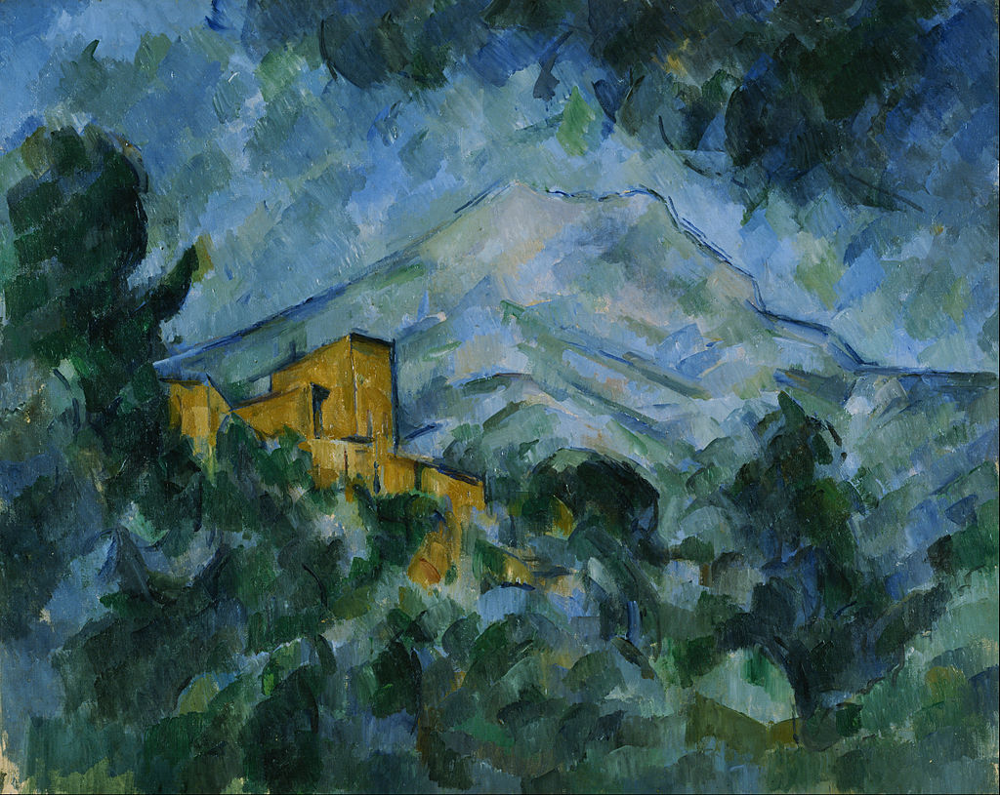

<head>
<meta charset="UTF-8" />
<meta name="keywords" content="drawing, painting" />
<meta name="description" content="drawings by Sunjy" />
<title>Sunjy</title>
<link rel="shortcut icon" type="image/x-icon" href="../../mImages/mCommon/favicon.ico" media="screen" />
<link rel="stylesheet" type="text/css" href="../../mCsses/mCommon/mCssA.css" />
<link rel="stylesheet" type="text/css" href="../../mCsses/mCommon/mCssB.css" />
<link rel="stylesheet" type="text/css" href="../../mCsses/mCommon/mCssC.css" />
<link rel="stylesheet" type="text/css" href="../../mCsses/mCommon/mCssD.css" />
<link rel="stylesheet" type="text/css" href="../../mCsses/mContent/mCssA.css" />
<link rel="stylesheet" type="text/css" href="../../mCsses/mContent/mCssB.css" />
<link rel="stylesheet" type="text/css" href="../../mCsses/mContent/mCssC.css" />
<link rel="stylesheet" type="text/css" href="../../mCsses/mContent/mCssD.css" />
</head>
<script type="text/javascript" src="../../mScripts/mContent/mContentAA.js" /></script>
<script type="text/javascript" src="../../mScripts/mContent/mContentAB.js" /></script>
<script type="text/javascript" src="../../mScripts/mContent/mContentAC.js" /></script>
<script type="text/javascript" src="../../mScripts/mContent/mContentAD.js" /></script>
<script type="text/javascript"></script> 
<script type="text/javascript">
document.write('<div class="mImgAbsolute"></div>');
/*
document.write('<p class="mFontSizeBColor" />From a white paper...</p>');
document.write('<table class="center"><tr><td>');
document.write('');
document.write('</td></tr></table>');
*/
</script>


<script type="text/javascript">
document.write('<p class="mFontSizeBColor" />Mont Sainte-Victoire and Château Noir</p>');
document.write('<p class="mFontSizeSColor" />“Mont Sainte-Victoire and Château Noir” by Paul Cézanne depicts the Château Noir  or”black castle,” an estate near the village of Le Tholonet on the way to Mont Sainte-Victoire. The Château Noir was in fact a reddish roughcast neo-Gothic building.<br><br>Cézanne rented a small cottage near Bibémus quarry to the east of Aix to make it easier for him to paint in the open air.<br><br>At this location, Cézanne created many of his later paintings. He was surrounded by pine forests, with the ochre-colored stone of Bibémus quarry nearby and a view of the towering Mont Sainte-Victoire.<br><br>The Mont Sainte-Victoire fascinated Cézanne all his life, and it provided an inexhaustible source of new compositions.<br><br>The Mont Sainte-Victoire series of paintings belong to Post-Impressionism. Cézanne was skilled at depicting nature and using different colors to represent the depth of objects.<br></p>');
document.write('<table class="center" /><tr><td>');
document.write('<br>Cézanne rented a small cottage near Bibémus quarry to the east of Aix to make it easier for him to paint in the open air.<br><br>At this location, Cézanne created many of his later paintings. He was surrounded by pine forests, with the ochre-colored stone of Bibémus quarry nearby and a view of the towering Mont Sainte-Victoire.<br><br>The Mont Sainte-Victoire fascinated Cézanne all his life, and it provided an inexhaustible source of new compositions.<br><br>The Mont Sainte-Victoire series of paintings belong to Post-Impressionism. Cézanne was skilled at depicting nature and using different colors to represent the depth of objects.<br>" />');
document.write('</td></tr></table>');
</script>


